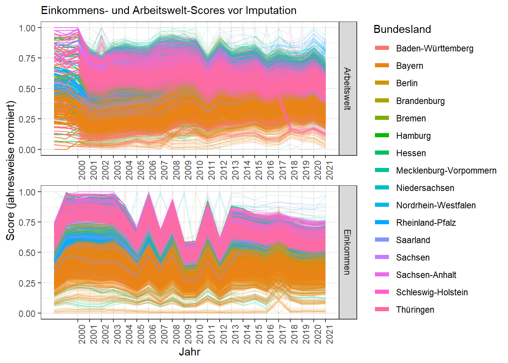
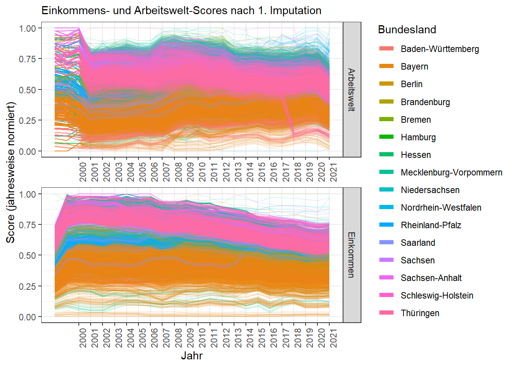

GISD - German Index of Socio-Economic Deprivation - Revision 2025
AutorIn: Lola Omar Soliman
Zuletzt kompiliert am: 02. Juni 2025
- Intro
- Syntax
- 0. Benötigte Pakete und Dateipfadsetzung
- I. Generierung eines ID-Datensatzes
- II. Indikatoren einlesen
- III. Anpassungen
- IV. Imputation fehlender Werte
- V. Faktorenanalyse (Hauptkomponentenanalyse) und Generierung der Faktorscores
- VI. Korrektur ausgewählter Ausreißer
- VII. Datenexport - Erstellung der Datensätze
- VIII. Datensätze für PLZ generieren
Intro
Dieses Dokument stellt die Generierung des German Index of Socio-Economic Deprivation vor. Dabei handelt es sich um einen Index sozioökonomischer Deprivation auf regionalräumlicher Ebene, der seit 2012 im Fachgebiet Soziale Determinanten der Gesundheit am RKI entwickelt wurde und seither jährlich aktualisiert wird. Für die Generierung werden Indikatoren der INKAR-Datenbank des BBSR verwendet. Aktueller Stand ist Revision 2025, welche Daten für die Jahre 1998-2021 bereitstellt.
Syntax
0. Benötigte Pakete und Dateipfadsetzung
Der Code nutzt die Pakete des Tidyverse, dazu Pakete für fremde Formate (Excel, Stata) und das Scales-Paket für einfachere Normalisierung.
# Libraries
library(tidyverse) # Tidyverse Methoden
library(readxl) # Excel-Files lesen
library(haven) # Stata-dta lesen & schreiben
library(scales) # Skalierungsfunktionen# Skriptpfad als Arbeitspfad setzen
setwd(dirname(rstudioapi::getSourceEditorContext()$path))
# Pfaddefinitionen
dir_input <- "../Rohdaten/"
dir_output <- "../../GISD_Release_aktuell/"
# # Output-Pfade erstellen
# dir.create(dir_output)
# dir.create(paste0(dir_output, "Bund"))
# dir.create(paste0(dir_output, "Bundesland"))
# Neuestes Datenjahr und Jahr des Gebietsstands vermerken
latestyear <- 2021
gebietsstand <- 2022
# Dezimal-Zahlendarstellung erzwingen (Wichtig für Kennziffer-Matching)
options(scipen=999)I. Generierung eines ID-Datensatzes
Zunächst wird eine Gebietsreferenz aufbereitet, in welcher alle Gemeinden zusammen mit ihren übergeordneten regionalen Einheiten und deren Kennziffern aufgeführt sind. Quelle ist die Gebietsstandsreferenz des BBSR. Anschließend werden die Indikatoren mit diesem “ID-Datensatz” verknüpft.
## I. Generierung eines ID-Datensatzes =============================================================
## Gebietsreferenz aufbereiten
# Bundesländer händisch ergänzen
bl_zuordnung <- tibble(gkz_prefix = c("01", "02", "03", "04", "05", "06", "07", "08",
"09", "10", "11", "12", "13", "14", "15", "16"),
Bundesland = c("Schleswig-Holstein", "Hamburg", "Niedersachsen", "Bremen",
"Nordrhein-Westfalen", "Hessen", "Rheinland-Pfalz",
"Baden-Württemberg", "Bayern", "Saarland", "Berlin",
"Brandenburg", "Mecklenburg-Vorpommern", "Sachsen",
"Sachsen-Anhalt", "Thüringen"))
# INKAR-Referenz laden
# (Quelle: https://www.bbsr.bund.de/BBSR/DE/forschung/raumbeobachtung/Raumabgrenzungen/downloads/download-referenzen.html)
id_dataset <- read_excel(paste0(dir_input,
"Referenz/raumgliederungen-referenzen-2022.xlsx"),
sheet="Gemeindereferenz (inkl. Kreise)") %>%
slice(-1) %>% # Erste Zeile ist leer, kann raus
# Erste zwei Ziffern der GKZ extrahieren und Bundesland zuordnen
mutate(gkz_prefix = substr(str_pad(GEM2022, width = 8, pad = "0"), 1, 2)) %>%
left_join(bl_zuordnung, by = "gkz_prefix") %>%
# Variablen formatieren
mutate("Gemeindekennziffer" = as.numeric(GEM2022),
"Gemeindename" = GEM_NAME,
"Bevoelkerung" = as.numeric(bev22)/100, # Bevölkerung muss in 100 angegeben werden (Wichtig!)
"GVBKennziffer" = as.numeric(VWG2022),
"GVBName" = VWG_NAME,
"Kreiskennziffer" = as.numeric(str_sub(KRS2022, end = -4)), # letzte 3 Ziffern entfernen
"Kreisname" = KRS_NAME,
"ROR_Kennziffer" = as.numeric(KRO2022),
"ROR_Name" = KRO_NAME,
"NUTS2_Kennziffer" = N2D2022,
"NUTS2_Name" = N2D_NAME) %>%
select(Gemeindekennziffer, Gemeindename,
Bevoelkerung,
GVBKennziffer, GVBName,
Kreiskennziffer, Kreisname,
ROR_Kennziffer, ROR_Name,
NUTS2_Kennziffer, NUTS2_Name,
Bundesland)
# Auf Missings prüfen
# nrow(id_dataset %>% filter(if_any(everything(), is.na))) # keine Missings| Ebene | Anzahl (Stand 31.12.2022) |
|---|---|
| Gemeinden | 10786 |
| Gemeindeverbände und verbandsfreie Gemeinden (GVB) | 4396 |
| Kreise und kreisfreie Städte (Kreise) | 400 |
| Raumordnungsregionen (ROR) | 96 |
| NUTS-2 | 38 |
II. Indikatoren einlesen
In diesem Abschnitt werden die für den GISD relevanten Indikatoren eingelesen und mit der Gebietsreferenz zu einen Datensatz zusammengeführt. Die Indikatoren liegen entweder auf Gemeinde-, Gemeindeverbands-, oder Kreisebene vor. Die Faktorenanalysen sollen später auf Gemeindeebene durchgeführt werden, deshalb werden Informationen der höheren Ebenen jeweils an alle untergeordneten Gemeinden angespielt.
Die Rohdaten liegen im Excel-Format vor und werden zu jeder Revision neu aus der INKAR-Datenbank heruntergeladen. Tabelle 2 stellt die Indikatoren und deren respektive Ebene dar. Für einige Indikatoren, die in absoluten Zahlen vorliegen, werden in diesem Kapitel Quoten bzw. Anteile berechnet: Arbeitslose pro 1000 Einwohner im Erwerbsalter, Anteil der Schulabgänger ohne Abschluss sowie der Anteil der Schulabgänger mit akad. Abschluss an allen SV-Beschäftigten. Zusätzlich werden Gemeinden ohne Bevölkerung ausgeschlossen.
## II. Indikatoren einlesen ========================================================================
# Bilden eines Datensatz-"Skeletts" (beginnend mit Kreisebene und neuestem Datenjahr)
Basedata <- id_dataset %>%
distinct(Kreiskennziffer) %>%
rename(Kennziffer = Kreiskennziffer) %>%
mutate(Jahr = latestyear)
# Inputliste der hinzuzufügenden Rohdaten erstellen
fileinputlist <- list.files(paste0(dir_input, "INKAR_1998_",latestyear)) %>%
.[str_detect(., "\\.xls(x)?$")] # Alle Excel-Files im Ordner auflisten (.xls und .xlsx)
# Es folgt eine Schleife, die einen Datensatz ergibt, wo jedes Datenjahr von jeder Gemeinde, jedem Gemeindeverband,
# und jedem Kreis eine eigene Zeile bildet. Es wird jede Zeile entsprechend ihrer Gebietsebene und Jahr mit den passenden
# Indikatoren befüllt (z.B. Kreise bekommen Bruttoverdienst usw., Gemeinden bekommen Arbeitslosigkeit usw., ...).
# Einlesen der einzelnen Excelfiles zu den Daten
for(file in fileinputlist) {
temp_import <- read_excel(paste0(dir_input,
"INKAR_1998_",latestyear,"/",
file),
skip = 1,
sheet = "Daten") %>%
rename(Kennziffer = ...1) %>% # Kennziffer-Spalte benennen
select(-...2, -...3) %>% # Spalten aufräumen
# Umwandeln von Wide zu Long - Das Jahr nun Zeilenweise statt Spaltenweise
gather(key = Jahr,
value = Value,
-Kennziffer,
convert = TRUE,
na.rm = TRUE) %>%
# Sicherheitshalber Datentyp numeric erzwingen
mutate(Kennziffer = as.numeric(Kennziffer),
Value = as.numeric(Value)) %>%
# Sicherheitshalber Datenjahre filtern
filter(Jahr >= 1998,
Jahr <= latestyear)
# Setze Dateinamen des jeweiligen Indikators als Variablenname ein
names(temp_import)[3] <- strsplit(strsplit(file,"_")[[1]][2],"[.]")[[1]][1]
# Zu Basedata hinzufügen
Basedata <- full_join(Basedata, temp_import,
by=c("Kennziffer", "Jahr"))
}
rm(fileinputlist, temp_import, file)
## Anpassungen
# Anpassung 1:
# INKAR gibt keine Daten zu Beschäftigtenabschlüssen vor 2012 raus. Daher wurden ergänzende Daten
# von der Bundesagentur für Arbeit erworben und manuell auf Gebietsstand 2022 harmonisiert.
# Die Daten vor und nach 2012 müssen aber noch zusammengeführt werden.
# Zusätzlich sind es vor 2012 Absolutzahlen und nach 2012 Werte relativ zu SV-Beschäftigten.
# Daher werden Werte vor 2012 gegen die Anzahl der SV-Beschäftigten gerechnet.
# Vereinigen der Beschäftigtenabschlüsse
Basedata <- Basedata %>%
mutate(`BeschaeftigtemitakadAbschluss-pre2012` = `BeschaeftigtemitakadAbschluss-pre2012` / SVBeschaeftigte * 100,
`BeschaeftigteohneAbschluss-pre2012` = `BeschaeftigteohneAbschluss-pre2012` / SVBeschaeftigte * 100,
BeschaeftigtemitakadAbschluss = if_else(Jahr <= 2011, `BeschaeftigtemitakadAbschluss-pre2012`, BeschaeftigtemitakadAbschluss),
BeschaeftigteohneAbschluss = if_else(Jahr <= 2011, `BeschaeftigteohneAbschluss-pre2012` , BeschaeftigteohneAbschluss)) %>%
select(-`BeschaeftigtemitakadAbschluss-pre2012`,
-`BeschaeftigteohneAbschluss-pre2012`,
- SVBeschaeftigte) # SV-Beschäftigte nicht mehr benötigt
# Anpassung 2:
# INKAR hat bisher noch keine Einkommensteuer-Daten für 2020 und 2021 hochgeladen.
# Es wird stattdessen provisorisch ein Datensatz ("IRIS") herangezogen,
# der auf Anfrage von INKAR zugeschickt wurde.
# Ergänzen der Einkommensteuer 2020-2021 durch IRIS-Daten
iris <- read_csv2(paste0(dir_input, #csv2 weil Spalten mit ";" separiert statt ","
"INKAR_1998_",latestyear,"/",
"IRIS_Einkommenssteuer_GVB_2022.csv"),
skip = 1) %>%
rename(Kennziffer = Gebietskennziffer) %>%
select(-Name) %>%
#Umwandeln von Wide zu Long
pivot_longer(cols = starts_with("Einkommensteuer"),
names_to = "Jahr",
names_prefix = "Einkommensteuer ", # Nur das Jahr im Spaltennamen
values_to = "Einkommensteuer") %>%
# Sicherheitshalber Datentyp numeric erzwingen
mutate(Kennziffer = as.numeric(Kennziffer),
Jahr = as.numeric(Jahr)) %>%
# Datenjahre filtern
filter(Jahr %in% c(2020, 2021),
!is.na(Einkommensteuer))
Basedata <- bind_rows(Basedata, iris) %>%
arrange(Kennziffer, Jahr)
rm(iris)
## Ab jetzt weiter wie gewohnt
# Basisdaten auf Gebietsebenen aufteilen
Basedata_Gemeindeebene <- Basedata %>%
select(Gemeindekennziffer = Kennziffer,
Jahr,
Arbeitslosigkeit,
Beschaeftigtenquote,
ErwerbsfaehigeBevoelkerung) %>%
filter(Gemeindekennziffer %in% id_dataset$Gemeindekennziffer)
Basedata_Gemeindeverbandsebene <- Basedata %>%
select(GVBKennziffer = Kennziffer,
Jahr,
Einkommensteuer) %>%
filter(GVBKennziffer %in% id_dataset$GVBKennziffer)
Basedata_Kreisebene <- Basedata %>%
select(Kreiskennziffer = Kennziffer,
Jahr,
Bruttoverdienst,
BeschaeftigtemitakadAbschluss,
BeschaeftigteohneAbschluss,
SchulabgaengerohneAbschluss,
Haushaltseinkommen,
Schuldnerquote) %>%
filter(Kreiskennziffer %in% id_dataset$Kreiskennziffer)
# Daten der verschiedenen Ebenen zusammenspielen
# Notiz: Im Gegensatz zu Basedata sind die Gebietsebenen hier ineinander verschachtelt.
# Gemeindeverbände und Kreise sind also nicht mehr eigene Zeilen,
# sondern als zusätzliche Spalten bei jeder Gemeinde mit aufgeführt.
Workfile <- expand.grid(Gemeindekennziffer=id_dataset$Gemeindekennziffer,
Jahr=sort(unique(Basedata$Jahr))) %>%
left_join(id_dataset, by = "Gemeindekennziffer") %>%
select(Gemeindekennziffer,
Jahr,
GVBKennziffer,
Kreiskennziffer,
Bevoelkerung,
Bundesland) %>%
left_join(Basedata_Gemeindeebene, by = c("Gemeindekennziffer", "Jahr")) %>%
left_join(Basedata_Gemeindeverbandsebene, by = c("GVBKennziffer", "Jahr")) %>%
left_join(Basedata_Kreisebene, by = c("Kreiskennziffer", "Jahr"))
## Datenlücken auf Gemeindeebene um Daten auf Kreisebene ergänzen (für 1998 - 2000)
# Anspielen der Arbeitslosigkeit und Erwerbsbevölkerung auf Kreisebene
fileinputlist_kreisebene <- list.files(paste0(dir_input, "INKAR_1998_",latestyear,
"/Indikatoren_Kreisebene/")) %>%
.[str_detect(., "\\.xls(x)?$")] # Alle Excel Files im Ordner auflisten
for(file in fileinputlist_kreisebene) {
temp_import <- read_excel(paste0(dir_input,
"INKAR_1998_",latestyear,
"/Indikatoren_Kreisebene/",
file),
skip = 1,
sheet = "Daten") %>%
rename(Kreiskennziffer = ...1) %>% # Kennziffer-Spalte benennen
select(-...2, -...3) %>% # Spalten aufräumen
# Umwandeln von Wide zu Long
gather(key = Jahr,
value = Value,
-Kreiskennziffer,
convert = TRUE,
na.rm = TRUE) %>%
#Sicherheitshalber Datentyp numeric erzwingen
mutate(Kreiskennziffer = as.numeric(Kreiskennziffer),
Value = as.numeric(Value)) %>%
# Sicherheitshalber Datenjahre filtern
filter(Jahr >= 1998,
Jahr <= latestyear)
# Setze Dateinamen des jeweiligen Indikators als Variablenname ein
names(temp_import)[3] <- strsplit(strsplit(file,"_")[[1]][2],"[.]")[[1]][1]
# Daten zu Workfile hinzufügen
Workfile <- full_join(Workfile, temp_import,
by=c("Kreiskennziffer", "Jahr"))
}
# Workspace aufräumen
rm(fileinputlist_kreisebene, temp_import, file,
bl_zuordnung,
Basedata_Gemeindeebene,
Basedata_Gemeindeverbandsebene,
Basedata_Kreisebene)# Finale Aufbereitungsschritte
Workfile <- Workfile %>%
# Entfernen bevölkerungsloser Gemeinden
filter(Bevoelkerung > 0) %>%
# Ersetzen fehlender Gemeindedaten durch Kreisdaten (1998-2000)
mutate(ErwerbsfaehigeBevoelkerung = ifelse(Jahr < 2001, ErwerbsfaehigeBevoelkerungKreis, ErwerbsfaehigeBevoelkerung),
Beschaeftigtenquote = ifelse(Jahr < 2001, BeschaeftigtenquoteKreis, Beschaeftigtenquote),
Arbeitslosigkeit = ifelse(Jahr < 2001, ArbeitslosigkeitKreis, Arbeitslosigkeit)) %>%
# Berechnen des Anteils Arbeitsloser an erwerbsfähiger Bevölkerung
mutate(Arbeitslosigkeit = Arbeitslosigkeit / ErwerbsfaehigeBevoelkerung * 1000) %>%
# Korrekturen aufgrund unsauberer Rohdaten
mutate(
# Arbeitslosenanteil aus Kreis beziehen wenn er über 100% liegt
Arbeitslosigkeit = ifelse(Arbeitslosigkeit >= 1, ArbeitslosigkeitKreis / ErwerbsfaehigeBevoelkerungKreis, Arbeitslosigkeit),
# Arbeitslosenanteil auf 0 setzen wenn erwerbsfähige Bevölkerung == 0
Arbeitslosigkeit = ifelse(ErwerbsfaehigeBevoelkerung == 0, 0, Arbeitslosigkeit),
# Beschäftigtenquote bei 80% deckeln
Beschaeftigtenquote = ifelse(Beschaeftigtenquote > 80, 80, Beschaeftigtenquote)) %>%
select(-BeschaeftigtenquoteKreis,
-ArbeitslosigkeitKreis,
-ErwerbsfaehigeBevoelkerungKreis,
-ErwerbsfaehigeBevoelkerung) %>% # Erwerbsfähige Bevölkerung nicht mehr benötigt
arrange(Gemeindekennziffer, Jahr) # Daten sortieren| Dimension | Name des Indikators | Indikator | Regionale Tiefe | Quelle |
|---|---|---|---|---|
| Bildung | Beschäftigte mit (Fach-)Hochschulabschluss* | Anteil der SV-Beschäftigten am Wohnort mit akademischem Abschluss an den SV-Beschäftigten am Wohnort in % | Kreis | Statistik der Bundesagentur für Arbeit |
| Bildung | Beschäftigte ohne Abschluss* | Anteil der SV-Beschäftigten am Wohnort ohne Berufsabschluss an den SV-Beschäftigten am Wohnort in % | Kreis | Statistik der Bundesagentur für Arbeit |
| Bildung | Schulabgänger:innen ohne Abschluss | Anteil der Schulabgänger:innen ohne Hauptschulabschluss an den Schulabgänger:innen in % | Kreis | Statistik der allgemeinbildenden Schulen des Bundes und der Länder |
| Beschäftigung | Arbeitslosigkeit | Anteil der Arbeitslosen an den Einwohner:innen im erwerbsfähigen Alter | Gemeinde | Statistik der Bundesagentur für Arbeit |
| Beschäftigung | Beschäftigtenquote | SV-Beschäftigte am Wohnort je 100 Einwohner:innen im erwerbsfähigen Alter | Gemeinde*** | Statistik der Bundesagentur für Arbeit |
| Beschäftigung | Bruttolohn und -gehalt | Monatlicher Bruttoverdienst der Arbeitnehmer:innen in Euro | Kreis | Volkswirtschaftliche Gesamtrechnung der Länder |
| Einkommen | Einkommensteuer** | Einkommensteuer in € je Einwohner:in | Gemeindeverband | Volkswirtschaftliche Gesamtrechnung der Länder |
| Einkommen | Haushaltsnettoeinkommen | Durchschnittliches Haushaltseinkommen in € je Einwohner:in | Kreis | Schuldneratlas Deutschland des Verbands der Vereine Creditreform e.V. |
| Einkommen | Schuldner:innenquote | Private Schuldner:innen je 100 volljährige Einwohner:innen in % | Kreis | Realsteuervergleich des Bundes und der Länder |
Quellen: INKAR 2024, Statistik der Bundesagentur für Arbeit
GVB = Gemeindeverbände und verbandsfreie Gemeinden
SV = sozialversicherungspflichtig
*Datenquelle: Für die Anteile der sozialversicherungspflichtig Beschäftigten ohne Abschluss und mit akademischem Abschluss wurden die Daten für die Jahre 2001 bis 2011 direkt über die Statistik der Bundesagentur für Arbeit bezogen. Alle weiteren Daten wurden aus INKAR 2024 bezogen.
**Die Werte für die Einkommensteuer der Jahre 2020 und 2021 wurden direkt vom BBSR bezogen.
***Für die Beschäftigtenquote standen Werte für die Gemeindeebene erst ab 2001 zur Verfügung. Für die Jahre 1998 bis 2000 wurden den Gemeinden die Werte der Kreisebene zugeordnet.
III. Anpassungen
1. Verbraucherpreisindex und Logarithmierung
Einkommensteuer, Haushaltseinkommen und Bruttoverdienst werden an den Verbraucherpreisindex (2015 = 100) angepasst und logarithmiert.
## III. Anpassungen ================================================================================
### 1. Verbraucherpreisindex und Logarithmierung
# Quelle VBP-Index: <https://www.destatis.de/DE/Themen/Wirtschaft/Preise/Verbraucherpreisindex/Publikationen/Downloads-Verbraucherpreise/verbraucherpreisindex-lange-reihen-pdf-5611103.html>
vbp <- tibble(Jahr = seq(1998, latestyear),
VBindex = c( 78.3, 78.8,
79.9, 81.5, 82.6, 83.5, 84.9,
86.2, 87.6, 89.6, 91.9, 92.2,
93.2, 95.2, 97.1, 98.5, 99.5,
100, 100.5, 102, 103.8, 105.3,
105.8, 109.1))
Workfile <- Workfile %>%
left_join(vbp, by = "Jahr") %>%
mutate(Haushaltseinkommen = Haushaltseinkommen / VBindex * 100,
Bruttoverdienst = Bruttoverdienst / VBindex * 100,
Einkommensteuer = Einkommensteuer / VBindex * 100,
Bruttoverdienst_ln = log(Bruttoverdienst),
Haushaltseinkommen_ln = log(Haushaltseinkommen),
# log(x = 0) = NaN. Daher auf 0.75 setzen, so als wäre Einkommensteuer = 2.12
Einkommensteuer_ln = ifelse(Einkommensteuer == 0, 0.75, log(Einkommensteuer)),
# log(x < 0) = NaN. Daher auf 0.25 setzen, so als wäre Einkommensteuer = 1.28
Einkommensteuer_ln = ifelse(Einkommensteuer < 0, 0.25, Einkommensteuer_ln)) %>%
select(-VBindex)
rm(vbp)2. G8/G9-Reformen
Die Bildungsvariablen “Anteil der Schulabgänger mit Hochschulreife” und “Anteil der Schulabgänger ohne Abschluss” werden als Quote relativ zur Gesamtanzahl der Schulabgänger berechnet. Durch die G8-Schulreformen und ihre Zurücknahme ergeben sich deshalb in den Bundesländern zu verschiedenen Zeitpunkten Verzerrungen. Diese Verzerrung wird über ein Regressionsmodell herausgerechnet (Koeffizient der Reformeffekte wird regionsspezifisch vom Indikator abgezogen).
### 2. G8/G9-Reformen
## Adjustment der Schulabgänger-Indikatoren anhand von Reformeffekten
# Generierung der Variablen zur Identifikation der Reformen (G8/G9), Rückker zu G9 (SN_KA)
# und abweichender Anerkennung von Abschlüssen für GymnasiastInnen (THvor2004)
# (Für einen detaillierteren Einblick siehe "Input/Referenz/Tabelle_G8.xlsx")
Workfile <- Workfile %>%
mutate(G8_jahr = case_when(Bundesland == "Schleswig-Holstein" & Jahr == 2016 ~ 1,
Bundesland == "Hamburg" & Jahr == 2010 ~ 1,
Bundesland == "Niedersachsen" & Jahr == 2011 ~ 1,
Bundesland == "Bremen" & Jahr == 2012 ~ 1,
Bundesland == "Nordrhein-Westfalen" & Jahr == 2013 ~ 1,
Bundesland == "Hessen" & Jahr == 2013 ~ 1,
Bundesland == "Baden-Württemberg" & Jahr == 2012 ~ 1,
Bundesland == "Bayern" & Jahr == 2011 ~ 1,
Bundesland == "Saarland" & Jahr == 2009 ~ 1,
Bundesland == "Berlin" & Jahr == 2012 ~ 1,
Bundesland == "Brandenburg" & Jahr == 2012 ~ 1,
Bundesland == "Mecklenburg-Vorpommern" & Jahr == 2008 ~ 1,
Bundesland == "Sachsen-Anhalt" & Jahr == 2007 ~ 1,
TRUE ~ 0), # TRUE = alle anderen Fälle
G9_jahr = case_when(Bundesland == "Baden-Württemberg" & Jahr == 2020 ~ 1,
TRUE ~ 0),
SN_KA = case_when(Bundesland == "Sachsen-Anhalt" & Jahr == 2001 ~ 1,
TRUE ~ 0),
THvor2004 = case_when(Bundesland == "Thüringen" & Jahr < 2004 ~ 1,
TRUE ~ 0)
)
# Funktion zum Ersetzen der Werte in den von Verzerrungen betroffenen Fällen durch um Reformeffekte bereinigte Quoten
adjust_g8 <- function(data, outcome_name) {
# Datensatz aufbereiten
regdata <- data %>%
group_by(Gemeindekennziffer) %>%
select(Gemeindekennziffer, Jahr,
G8_jahr, G9_jahr, SN_KA, THvor2004,
Outcome = paste(outcome_name)) %>%
mutate(MEAN = mean(Outcome, na.rm = TRUE)) %>%
ungroup()
# Regression durchführen (Effekt der Reformen auf Schulabgängerquoten)
reg_g8 <- lm(Outcome ~
I(Jahr*Jahr*MEAN) + I(Jahr*MEAN) +
G8_jahr + G9_jahr + SN_KA + THvor2004,
data = regdata,
na.action = "na.exclude")
# # Werte prüfen
# print(reg_g8)
# Koeffizient des Effekts von Indikator abziehen (wenn von Reform betroffen)
regdata %>%
mutate(coef_G8 = coef(reg_g8)["G8_jahr"],
coef_G9 = coef(reg_g8)["G9_jahr"],
coef_SH = coef(reg_g8)["SN_KA"],
coef_TH = coef(reg_g8)["THvor2004"],
Outcome = ifelse(G8_jahr == 1,
Outcome - coef_G8,
Outcome),
Outcome = ifelse(G9_jahr == 1,
Outcome - coef_G9,
Outcome),
Outcome = ifelse(SN_KA == 1,
Outcome - coef_SH,
Outcome),
Outcome = ifelse(THvor2004 == 1,
Outcome - coef_TH,
Outcome)) %>%
pull(Outcome) # Bereinigten Wert ausgeben
}
# Adjustment auf Indikator anwenden
Workfile <- Workfile %>%
mutate(SchulabgaengerohneAbschluss_adj = adjust_g8(.,"SchulabgaengerohneAbschluss"))
rm(adjust_g8)

3. Beschäftigtenabschlüsse in den neuen Bundesländern
Aufgrund von Ost-West-Unterschieden (disproportional mehr Abschlüsse in den neuen Bundesländern) wird der Indikator “Beschäftigte ohne Abschluss” ebenfalls durch eine Regression angepasst (Koeffizient des Ost-West-Effekts wird vom Indikator abgezogen).
### 3. Beschäftigtenabschlüsse in den neuen Bundesländern
# Markieren der Kreise
Workfile <- Workfile %>% mutate(ow = ifelse(Kreiskennziffer < 11000, 0, 1))
# Funktion zum Ersetzen der Werte in den betroffenen Fällen durch um Ost-West-Effekte bereinigte Werte
adjust_ostwest <- function(data, outcome_name) {
# Datensatz aufbereiten
regdata <- data %>%
select(Gemeindekennziffer,
Jahr,
ow,
Outcome = all_of(outcome_name)) %>%
mutate(Jahr_Dummy = relevel(as.factor(Jahr), ref = "2012")) %>%
ungroup()
# Regression durchführen (Effekt der Region auf Beschäftigtenabschlüsse)
reg_ow <- lm(Outcome ~
Jahr_Dummy + Jahr_Dummy*ow,
data = regdata,
na.action = "na.exclude")
# # Werte prüfen
# print(reg_ow)
# Koeffizient des Effekts von Indikator abziehen (wenn Teil der neuen Länder)
regdata %>%
mutate(coef_ow = coef(reg_ow)["ow"],
Outcome = ifelse(ow == 1,
Outcome - coef_ow,
Outcome)) %>%
pull(Outcome) # Bereinigten Wert ausgeben
}
# Adjustment auf Indikator anwenden
Workfile <- Workfile %>%
mutate(BeschaeftigteohneAbschluss_adj = adjust_ostwest(.,"BeschaeftigteohneAbschluss"))
rm(adjust_ostwest)

4. Messänderung SV-Beschäftigte
Die Zählung der SV-Beschaeftigten wurde graduell zwischen 2011 und 2012 umgestellt. Da SV-Beschäftigte gegen Beschäftigte ohne Abschluss bzw. mit akademischem Abschluss gerechnet wurde, führt die Umstellung zu einer Verzerrung zwischen den Werten vor und nach 2012. Auch diese Verzerrung wird mit einem Regressionsmodell herausgerechnet (Koeffizient des Effekts “Messung vor 2012” wird für Jahre vor 2012 von Indikator abgezogen).
### 4. Messänderung SV-Beschäftigte
## Beschaeftigte ohne Abschluss
# Werte von 2013 auf 2012 übertragen und Messänderung markieren
Workfile <- Workfile %>%
group_by(Gemeindekennziffer) %>%
arrange(Jahr) %>%
mutate(
# Betroffene Jahre markieren (Alles vor 2012)
Messaenderung_Besch = ifelse(Jahr < 2012, 1, 0),
# Ohne Abschluss für 2012 von 2013 rüberkopieren
BeschaeftigteohneAbschluss_adj =
if_else(Jahr == 2012,
lead(BeschaeftigteohneAbschluss_adj, 1),
BeschaeftigteohneAbschluss_adj),
# Mit akad. Abschluss für 2012 von 2013 rüberkopieren
BeschaeftigtemitakadAbschluss =
if_else(Jahr == 2012,
lead(BeschaeftigtemitakadAbschluss, 1),
BeschaeftigtemitakadAbschluss)) %>%
ungroup() %>%
arrange(Gemeindekennziffer, Jahr)
# Datensatz kopieren für Plot nachher
Workfile_preAdj <- Workfile
# Funktion zum Ersetzen der Werte in den betroffenen Jahren durch um Messänderungs-Effekte bereinigte Werte
adjust_messaenderung <- function(data, outcome_name) {
# Datensatz aufbereiten
regdata <- data %>%
select(Gemeindekennziffer,
Jahr,
Messaenderung_Besch,
"Outcome"=paste(outcome_name)) %>%
mutate(MEAN=mean(Outcome, na.rm=TRUE))
# Regression durchführen (Effekt der Messänderung auf Beschaeftigtenabschlüsse)
reg_messaenderung <- lm(Outcome ~
I(Jahr*Jahr*MEAN) + I(Jahr*MEAN) + Messaenderung_Besch,
data = regdata,
na.action = "na.exclude")
# # Werte prüfen
# print(reg_messaenderung)
# Koeffizient des Effekts von Indikator abziehen (für Beobachtungen vor 2012)
regdata %>%
mutate(coef_mb = coef(reg_messaenderung)["Messaenderung_Besch"],
Outcome = ifelse(Messaenderung_Besch == 1, # (entspricht Jahr < 2012)
Outcome - coef_mb,
Outcome)) %>%
pull(Outcome) # Bereinigten Wert ausgeben
}
# Adjustment auf Indikatoren anwenden
Workfile <- Workfile %>%
mutate(BeschaeftigteohneAbschluss_adj = adjust_messaenderung(.,"BeschaeftigteohneAbschluss_adj"),
BeschaeftigtemitakadAbschluss_adj = adjust_messaenderung(.,"BeschaeftigtemitakadAbschluss")) %>%
# Sämtliche Adjustment-Hilfsvariablen entfernen
select(-G8_jahr, -G9_jahr, -SN_KA, -THvor2004,
-ow, -Messaenderung_Besch)
rm(adjust_messaenderung)


IV. Imputation fehlender Werte
Fehlende Werte auf einem Indikator werden anhand einer Regression imputiert, die vom gemeindespezifischen Zeitreihenmittelwert desselben Indikators informiert wird. Früher wurde anhand der Arbeitslosigkeit und der Schulabgänger mit Hochschulreife imputiert, aber das brachte einen mit diesen Variablen korrelierenden Bias mit sich. Daher wird die Imputation nun nur noch vom Indikator selbst informiert. Die Verteilung der Missings vor der Imputation ist in Tabelle 3 ersichtlich.
## IV. Imputation fehlender Werte ==================================================================
listofdeterminants <- c("BeschaeftigtemitakadAbschluss_adj",
"BeschaeftigteohneAbschluss_adj",
"SchulabgaengerohneAbschluss_adj",
"Arbeitslosigkeit",
"Beschaeftigtenquote",
"Bruttoverdienst_ln",
"Einkommensteuer_ln",
"Haushaltseinkommen_ln",
"Schuldnerquote")
# Funktion zum Imputieren anhand des Zeitreihenmittelwerts
reg_impute <- function(data, outcome_name) {
# Datensatz aufbereiten
regdata <- data %>%
# Nach Gemeinde gruppieren
group_by(Gemeindekennziffer) %>%
select(Gemeindekennziffer,
Jahr,
"Outcome"=paste(outcome_name)) %>%
# Zeitreihenmittelwert vermerken
mutate(MEAN=mean(Outcome, na.rm=TRUE)) %>%
ungroup()
# Regression durchführen (Effekt des Zeitreihenmittelwerts auf den Indikator)
reg_imp <- lm(Outcome ~
I(Jahr*Jahr*MEAN) + I(Jahr*MEAN),
data = regdata,
na.action = "na.exclude")
# Predicted Value einsetzen
regdata %>%
select(Outcome) %>%
mutate(
# Predicted Value des Modells vermerken
Imputed = predict(reg_imp,
newdata = regdata),
# Missings mit predicted Value ersetzen
Outcome = ifelse(is.finite(Outcome),
Outcome,
Imputed),
# Implausible (negative) Werte zurück auf 0 setzen
Outcome = ifelse(Outcome < 0,
0,
Outcome)) %>%
pull(Outcome) # Errechneten Wert ausgeben
}
# Über sämtliche Indikatoren imputieren
Workfile_imputed <- Workfile %>%
mutate(BeschaeftigtemitakadAbschluss_adj=reg_impute(.,"BeschaeftigtemitakadAbschluss_adj"),
BeschaeftigteohneAbschluss_adj =reg_impute(.,"BeschaeftigteohneAbschluss_adj"),
SchulabgaengerohneAbschluss_adj =reg_impute(.,"SchulabgaengerohneAbschluss_adj"),
Arbeitslosigkeit =reg_impute(.,"Arbeitslosigkeit"),
Beschaeftigtenquote =reg_impute(.,"Beschaeftigtenquote"),
Bruttoverdienst_ln =reg_impute(.,"Bruttoverdienst_ln"),
Einkommensteuer_ln =reg_impute(.,"Einkommensteuer_ln"),
Haushaltseinkommen_ln =reg_impute(.,"Haushaltseinkommen_ln"),
Schuldnerquote =reg_impute(.,"Schuldnerquote")) %>%
select(Gemeindekennziffer,
Jahr,
GVBKennziffer,
Kreiskennziffer,
Bevoelkerung,
Bundesland,
all_of(listofdeterminants))
# # Ergebnis der Imputation
# cat("Übersicht über Indikatoren nach Imputation: \n\n")
# summary(Workfile_imputed %>% select(all_of(listofdeterminants)))
#
# # Vergleich der Anzahl NAs vor und nach Imputation
# missings <- Workfile %>%
# # Nur relevante Variablen mitnehmen
# select(Gemeindekennziffer,
# Jahr,
# all_of(listofdeterminants)) %>%
# # Reshape auf long (Indikatoren zeilenweise)
# pivot_longer(cols = 3:11,
# names_to = "Indikator",
# values_to = "value") %>%
# # Missings aufsummieren
# group_by(Indikator) %>%
# summarise(PreImputation = sum(is.na(value))) %>%
# # Selbiges für imputierten Datensatz und dann joinen
# left_join(Workfile_imputed %>% pivot_longer(cols = 7:15,
# names_to = "Indikator",
# values_to = "value") %>%
# # Missings aufsummieren
# group_by(Indikator) %>%
# summarise(PostImputation = sum(is.na(value))),
# by = "Indikator")
#
# missings
#
# rm(missings)
rm(reg_impute)| Indikator | 1998 | 1999 | 2000 | 2001 | 2002 | 2003 | 2004 | 2005 | 2006 | 2007 | 2008 | 2009 | 2010 | 2011 | 2012 | 2013 | 2014 | 2015 | 2016 | 2017 | 2018 | 2019 | 2020 | 2021 |
|---|---|---|---|---|---|---|---|---|---|---|---|---|---|---|---|---|---|---|---|---|---|---|---|---|
| Beschäftigte mit akad. Abschluss | 10786 | 10786 | 10786 | 10786 | 0 | 0 | 0 | 0 | 0 | 0 | 0 | 0 | 0 | 0 | 0 | 0 | 0 | 0 | 0 | 0 | 0 | 0 | 0 | 0 |
| Beschäftigte ohne Abschluss | 10786 | 10786 | 10786 | 10786 | 0 | 0 | 0 | 0 | 0 | 0 | 0 | 0 | 0 | 0 | 0 | 0 | 0 | 0 | 0 | 0 | 0 | 0 | 0 | 0 |
| Schulabgänger ohne Abschluss | 0 | 0 | 0 | 951 | 0 | 0 | 0 | 0 | 0 | 0 | 0 | 0 | 0 | 0 | 0 | 0 | 0 | 0 | 0 | 0 | 0 | 0 | 0 | 0 |
| Arbeitslosigkeit | 0 | 0 | 0 | 0 | 0 | 0 | 0 | 0 | 0 | 0 | 0 | 0 | 0 | 0 | 0 | 0 | 0 | 0 | 0 | 0 | 0 | 0 | 1 | 0 |
| Beschäftigtenquote | 0 | 0 | 0 | 1 | 1 | 1 | 1 | 1 | 1 | 0 | 0 | 0 | 0 | 0 | 0 | 0 | 0 | 0 | 6 | 0 | 0 | 5 | 1 | 0 |
| Bruttoverdienst | 10786 | 10786 | 0 | 0 | 0 | 0 | 0 | 0 | 0 | 0 | 0 | 0 | 0 | 0 | 0 | 0 | 0 | 0 | 0 | 0 | 0 | 0 | 0 | 0 |
| Einkommensteuer | 0 | 0 | 0 | 0 | 0 | 0 | 0 | 0 | 0 | 0 | 0 | 0 | 0 | 0 | 0 | 0 | 0 | 0 | 0 | 0 | 0 | 0 | 0 | 0 |
| Haushaltseinkommen | 10786 | 10786 | 0 | 0 | 0 | 0 | 0 | 0 | 0 | 0 | 0 | 0 | 0 | 0 | 0 | 0 | 0 | 0 | 0 | 0 | 0 | 0 | 0 | 0 |
| Schuldnerquote | 10786 | 10786 | 10786 | 10786 | 10786 | 10786 | 0 | 0 | 0 | 0 | 0 | 0 | 0 | 0 | 0 | 0 | 0 | 0 | 0 | 0 | 0 | 0 | 0 | 0 |
V. Faktorenanalyse (Hauptkomponentenanalyse) und Generierung der Faktorscores
Die Indikatoren werden den einzelnen Teildimensionen des GISD zugewiesen. Für die Faktorenanalysen fallen nur die letzten 20 Datenjahre mit rein.
## V. Faktorenanalyse (Hauptkomponentenanalyse) und Generierung der Faktorscores ===================
TS_Bildung <- Workfile_imputed %>%
filter(Jahr > (latestyear - 20)) %>%
select(BeschaeftigtemitakadAbschluss_adj,
BeschaeftigteohneAbschluss_adj,
SchulabgaengerohneAbschluss_adj)
TS_Arbeitswelt <- Workfile_imputed %>%
filter(Jahr > (latestyear - 20)) %>%
select(Arbeitslosigkeit,
Beschaeftigtenquote,
Bruttoverdienst_ln)
TS_Einkommen <- Workfile_imputed %>%
filter(Jahr > (latestyear - 20)) %>%
select(Einkommensteuer_ln,
Haushaltseinkommen_ln,
Schuldnerquote)Faktorenanalyse
Die Faktorenanalyse basiert auf einer Hauptkomponentenanalyse (PCA) für jede der drei Dimensionen
### Faktorenanalyse
# PCA für die Bildungsdimension
TS_Bildung.pca <- prcomp(TS_Bildung,
center = TRUE, scale. = TRUE, retx = TRUE)
# TS_Bildung.pca # Zweite Komponente < 1
TS_Bildung.pca <- prcomp(TS_Bildung,
center = TRUE, scale. = TRUE, retx = TRUE,
rank. = 1)
# PCA für die Arbeitsweltdimension
TS_Arbeitswelt.pca <- prcomp(TS_Arbeitswelt,
center = TRUE, scale. = TRUE, retx = TRUE)
# TS_Arbeitswelt.pca # Zweite Komponente < 1
TS_Arbeitswelt.pca <- prcomp(TS_Arbeitswelt,
center = TRUE, scale. = TRUE, retx = TRUE,
rank. = 1)
# PCA für die Einkommensdimension
TS_Einkommen.pca <- prcomp(TS_Einkommen,
center = TRUE, scale. = TRUE, retx = TRUE)
# TS_Einkommen.pca # Zweite Komponente < 1
TS_Einkommen.pca <- prcomp(TS_Einkommen,
center = TRUE, scale. = TRUE, retx = TRUE,
rank. = 1)


Generierung der Faktorscores
Es werden die GISD-Scores predicted (analog zu Check_Faktorenanalyse). Dann werden die Dimensionen alle so gepolt, dass sie positiv mit Arbeitslosigkeit korrelieren. Zusätzlich werden die Teilscores jahresweise normiert, zum Gesamtscore aufsummiert, und der Gesamtscore nochmals jahresweise normiert.
### Generierung der Faktorscores
# Um die Eigenvektoren in Faktorladungen umzuwandeln müssen Werte in der Scorespalte noch mit den Wurzeln der ersten Eigenwerte multipliziert werden (= Standardabweichung der jeweils ersten Komponente)
Components_B <- tibble(Indikator = rownames(TS_Bildung.pca$rotation),
Dimension = "Bildung",
Anteil = TS_Bildung.pca$rotation^2,
Score = TS_Bildung.pca$rotation * TS_Bildung.pca$sdev[1])
Components_A <- tibble(Indikator = rownames(TS_Arbeitswelt.pca$rotation),
Dimension = "Arbeitswelt",
Anteil = TS_Arbeitswelt.pca$rotation^2,
Score = TS_Arbeitswelt.pca$rotation * TS_Arbeitswelt.pca$sdev[1])
Components_E <- tibble(Indikator = rownames(TS_Einkommen.pca$rotation),
Dimension = "Einkommen",
Anteil = TS_Einkommen.pca$rotation^2,
Score = TS_Einkommen.pca$rotation * TS_Einkommen.pca$sdev[1])
# Komponente in extra Datensatz vermerken
GISD_Components <- bind_rows(Components_B,
Components_A,
Components_E) %>%
mutate(Proportion = round(Anteil*100, digits=1)) %>%
group_by(Dimension) %>%
mutate(AnteilGISD = round(Proportion/3, digits=1),
Faktorladung = round(Score, digits=2)) %>%
ungroup() %>%
mutate(Faktorladung = as.numeric(Faktorladung),
"Anteil am Teilscore" = as.numeric(Proportion),
"Anteil am GISD" = as.numeric(AnteilGISD)) %>%
select(Indikator,
Dimension,
Faktorladung,
"Anteil am Teilscore",
"Anteil am GISD")
# Prediction der Scores
Results_raw <- Workfile_imputed %>%
select(Gemeindekennziffer,
Jahr,
GVBKennziffer,
Kreiskennziffer,
Bevoelkerung,
Bundesland,
all_of(listofdeterminants)) %>%
mutate(TS_Bildung_raw = c(predict(TS_Bildung.pca , newdata = Workfile_imputed)),
TS_Arbeitswelt_raw = c(predict(TS_Arbeitswelt.pca, newdata = Workfile_imputed)),
TS_Einkommen_raw = c(predict(TS_Einkommen.pca , newdata = Workfile_imputed)))
# # Übersicht über Teildimensionen
# summary(Results_raw %>% select(TS_Bildung_raw,
# TS_Arbeitswelt_raw,
# TS_Einkommen_raw))
#
# # Korrelationsmatrix der Teildimensionen + Arbeitslosigkeit
# cor(Results_raw %>% select(Arbeitslosigkeit,
# TS_Bildung_raw,
# TS_Arbeitswelt_raw,
# TS_Einkommen_raw))
# Dimensionen so polen, dass sie positiv mit Arbeitslosigkeit korrelieren, um Deprivation abzubilden
# (= "wenn Korrelation negativ, dann multipliziere mit -1")
if (cor(Results_raw$Arbeitslosigkeit, Results_raw$TS_Bildung_raw) < 0) {
Results_raw$TS_Bildung_raw <- Results_raw$TS_Bildung_raw*-1
}
if (cor(Results_raw$Arbeitslosigkeit, Results_raw$TS_Arbeitswelt_raw) < 0) {
Results_raw$TS_Arbeitswelt_raw <- Results_raw$TS_Arbeitswelt_raw*-1
}
if (cor(Results_raw$Arbeitslosigkeit, Results_raw$TS_Einkommen_raw) < 0) {
Results_raw$TS_Einkommen_raw <- Results_raw$TS_Einkommen_raw*-1
}
# # Korrelationsmatrix der Teildimensionen + Arbeitslosigkeit nach Umpolung
# cor(Results_raw %>% select(Arbeitslosigkeit,
# TS_Bildung_raw,
# TS_Arbeitswelt_raw,
# TS_Einkommen_raw))
# Normieren
Results_raw <- Results_raw %>%
group_by(Jahr) %>%
mutate(
# Teildimensionen normieren (neu: jahresweise statt über gesamte Zeitreihe)
TS_Bildung_nrm = rescale(TS_Bildung_raw),
TS_Arbeitswelt_nrm = rescale(TS_Arbeitswelt_raw),
TS_Einkommen_nrm = rescale(TS_Einkommen_raw),
# Zu Gesamtscore aufaddieren und noch mal jahresweise normieren
GISD_Score = rescale(TS_Bildung_nrm + TS_Arbeitswelt_nrm + TS_Einkommen_nrm),
GISD_Score = round(GISD_Score, digits=5)) %>%
ungroup()
# # Übersicht über Gesamt- und Teilscores nach Normierung
# summary(Results_raw %>% select(TS_Bildung_nrm,
# TS_Arbeitswelt_nrm,
# TS_Einkommen_nrm,
# GISD_Score))
rm(TS_Bildung,
TS_Arbeitswelt,
TS_Einkommen,
Components_B,
Components_A,
Components_E)| Indikator | Faktorladung | Anteil am Teilscore | Anteil am GISD |
|---|---|---|---|
| Bildung | |||
| Beschäftigte mit akad. Abschluss (adj.) | 0.71 | 34.3 | 11.4 |
| Beschäftigte ohne Abschluss (adj.) | -0.71 | 34.3 | 11.4 |
| Schulabgänger ohne Abschluss (adj.) | -0.67 | 31.4 | 10.5 |
| Beschäftigung | |||
| Arbeitslosigkeit | -0.83 | 39.5 | 13.2 |
| Beschäftigtenquote | 0.58 | 19.5 | 6.5 |
| Bruttoverdienst (log.) | 0.84 | 40.9 | 13.6 |
| Einkommen | |||
| Einkommensteuer (log.) | 0.92 | 40.3 | 13.4 |
| Haushaltseinkommen (log.) | 0.92 | 40.8 | 13.6 |
| Schuldnerquote | -0.63 | 18.9 | 6.3 |
log. = logarithmiert
adj. = adjustiert
Darstellung der Faktorladungen auf der ersten Hauptkomponente für die einzelnen Dimensionen. Eigenwerte der ersten Komponenten; η(Bildung) = 1.5: η(Beschäftigung) = 1.7; η(Einkommen) = 2.1. Die Eigenwerte der zweiten und dritten Komponenten liegen jeweils unter 0,85. Korrelationen zwischen den Scores der Teildimensionen für das Jahr 2021: r(Beschäftigung|Einkommen) = 0.69; r(Beschäftigung|Bildung) = 0.52; r(Einkommen|Bildung) = 0.75
VI. Korrektur ausgewählter Ausreißer
Auswahl der Ausreißer basiert auf manueller, visueller Auslese anhand von z-Scores und jahresweise normierten Teilscores. Es geht spezifisch um die Teildimensionen Arbeitswelt und Einkommen. Aus der Selektion werden die rohen (=nicht normierten) Scores in zwei Runden neu imputiert durch Interpolation des Vor- und Nachjahres. (für einen tieferen Einblick siehe Check_Ausreißer_Teildimensionen).
## VI. Korrektur ausgewählter Ausreißer ============================================================
# Plotübergreifende Komponente zusammenfassen
plotComponents <- list(
# X-Achsen-Labels senkrecht anzeigen
theme(axis.text.x = element_text(angle=90)),
# Datenbereich auf 2000 bis neuestes Datenjahr beschränken
scale_x_continuous(breaks = seq(2000, latestyear),
minor_breaks = NULL),
# Über Dimensionen facettieren
facet_wrap(~ Dimension, ncol = 1,
strip.position = "right",
scales = "free_x"),
# Legenden-Icons sichbarer machen
guides(color=guide_legend(override.aes=list(alpha=1, linewidth=2)))
)
# Jahresnormierte Teilscores für Inspektion und Selektion
Scores_raw_long <- Results_raw %>%
select(Gemeindekennziffer, Jahr, Bundesland,
Gesamtscore = GISD_Score,
Bildung = TS_Bildung_nrm,
Arbeitswelt = TS_Arbeitswelt_nrm,
Einkommen = TS_Einkommen_nrm) %>%
# Auf long reshapen
pivot_longer(cols = c(Gesamtscore, Bildung, Arbeitswelt, Einkommen),
names_to = "Dimension",
values_to = "Score") %>%
# Gemeinde-Jahr-String für Zuordnung nachher
mutate(gkz_j = paste0(Gemeindekennziffer,"_",as.character(Jahr)))
# Z (relativ zu Gemeindezeitreihe) aufbereiten
Z_ts <- Results_raw %>%
# Datenbasis für Z: zeitreihennormierte Teilscores
group_by(Gemeindekennziffer) %>%
mutate(Arbeitswelt = rescale(TS_Arbeitswelt_raw),
Einkommen = rescale(TS_Einkommen_raw)) %>%
# Auf long reshapen
pivot_longer(cols = c(Arbeitswelt, Einkommen),
names_to = "Dimension",
values_to = "Score") %>%
# Z berechnen
group_by(Gemeindekennziffer, Dimension) %>%
mutate(z = (Score - mean(Score)) / sd(Score)) %>%
ungroup() %>%
select(Gemeindekennziffer, Jahr,
Dimension, z)
# Z an den long Datensatz joinen
Scores_raw_long <- Scores_raw_long %>%
left_join(Z_ts, by = c("Gemeindekennziffer", "Jahr", "Dimension"))
## Erste Übersicht
# Alle Scores
plot_scores <- ggplot(Scores_raw_long,
aes(x = Jahr,
y = Score,
group = Gemeindekennziffer)) +
geom_line(alpha = 0.3, linewidth = 0.1) +
labs(subtitle = "Teilscores des GISD vor Imputation",
y = "Score (jahresweise normiert)") +
plotComponents
# Genauerer Blick auf Arbeitswelt und Einkommen
plot_ae <- ggplot(Scores_raw_long %>% filter(Dimension %in% c("Einkommen",
"Arbeitswelt")),
aes(x = Jahr,
y = Score,
group = Gemeindekennziffer,
color = Bundesland)) +
geom_line(alpha = 0.15, linewidth = 0.5) +
labs(subtitle = "Einkommens- und Arbeitswelt-Scores vor Imputation",
y = "Score (jahresweise normiert)") +
plotComponents
## Selektion
# Arbeitswelt
aus.arb.bw <- Scores_raw_long %>%
filter(Dimension == "Arbeitswelt",
Bundesland == "Baden-Württemberg",
(Jahr == 2002 & Score > 0.5))
aus.arb.mv <- Scores_raw_long %>%
filter(Dimension == "Arbeitswelt",
Bundesland == "Mecklenburg-Vorpommern",
(Jahr == 2002 & Score > 0.85) |
(Jahr %in% c(2011, 2013, 2015, 2016) & Score > 0.95))
aus.arb.ni <- Scores_raw_long %>%
filter(Dimension == "Arbeitswelt",
Bundesland == "Niedersachsen",
(Jahr %in% c(2002, 2004) & (z > 2 | z < -1)))
aus.arb.nw <- Scores_raw_long %>%
filter(Dimension == "Arbeitswelt",
Bundesland == "Nordrhein-Westfalen",
(Jahr == 2016 & z < -1.5))
aus.arb.rp <- Scores_raw_long %>%
filter(Dimension == "Arbeitswelt",
Bundesland == "Rheinland-Pfalz",
(Jahr == 2002 & z > 2) |
(Jahr == 2017 & Score > 0.95))
aus.arb.sn <- Scores_raw_long %>%
filter(Dimension == "Arbeitswelt",
Bundesland == "Sachsen",
(Jahr == 2013 & z > 1))
aus.arb.st <- Scores_raw_long %>%
filter(Dimension == "Arbeitswelt",
Bundesland == "Sachsen-Anhalt",
(Jahr == 2013 & z > 1) |
(Jahr == 2015 & Score > 0.95))
aus.arb.sh <- Scores_raw_long %>%
filter(Dimension == "Arbeitswelt",
Bundesland == "Schleswig-Holstein",
(Jahr == 2002 & z > 2) |
(Jahr == 2018 & Score > 0.9))
aus.arb.th <- Scores_raw_long %>%
filter(Dimension == "Arbeitswelt",
Bundesland == "Thüringen",
(Jahr == 2002 & z >= 2) |
(Jahr == 2005 & z < 0) |
(Jahr == 2018 & Score < 0.1) |
(Jahr == 2019 & z > 0))
ausreisser_a <- bind_rows(aus.arb.bw,
aus.arb.mv,
aus.arb.ni,
aus.arb.nw,
aus.arb.rp,
aus.arb.sn,
aus.arb.st,
aus.arb.sh,
aus.arb.th)
# Einkommen
aus.eink.bw <- Scores_raw_long %>%
filter(Dimension == "Einkommen",
Bundesland == "Baden-Württemberg",
(Jahr == 2004 & z < -1) |
(Jahr == 2015 & (z < -1.5 | z > 0.8)) |
(Jahr == 2016 & Score < 0.2))
aus.eink.by <- Scores_raw_long %>%
filter(Dimension == "Einkommen",
Bundesland == "Bayern",
(Jahr == 2004 & (z < -1 | z > 4)) |
(Jahr == 2012 & (z < -1)) |
(Jahr == 2017))
aus.eink.bb <- Scores_raw_long %>%
filter(Dimension == "Einkommen",
Bundesland == "Brandenburg",
z > 2)
aus.eink.ni <- Scores_raw_long %>%
filter(Dimension == "Einkommen",
Bundesland == "Niedersachsen",
Jahr %in% c(2005, 2007, 2009, 2012),
Score > 0.75)
aus.eink.nw <- Scores_raw_long %>%
filter(Dimension == "Einkommen",
Bundesland == "Nordrhein-Westfalen",
(Jahr == 2004 & z <= -2) |
(Jahr == 2011 & z <= -1) |
(Jahr <= 2017 & z <= -1.5))
ausreisser_e <- bind_rows(aus.eink.bw,
aus.eink.by,
aus.eink.bb,
aus.eink.ni,
aus.eink.nw)
## Erste Runde Imputation
Results_imp1 <- Results_raw %>%
# Gemeinde-Jahr-String für Zuordnung
mutate(gkz_j = paste0(Gemeindekennziffer,"_",as.character(Jahr))) %>%
# Interpolieren (Reminder: Es geht um die rohen Scores)
group_by(Gemeindekennziffer) %>%
mutate(TS_Arbeitswelt_imp1 = if_else(gkz_j %in% ausreisser_a$gkz_j,
(lag(TS_Arbeitswelt_raw) + lead(TS_Arbeitswelt_raw)) / 2,
TS_Arbeitswelt_raw),
TS_Einkommen_imp1 = if_else(gkz_j %in% ausreisser_e$gkz_j,
(lag(TS_Einkommen_raw) + lead(TS_Einkommen_raw)) / 2,
TS_Einkommen_raw),
Imputed = if_else(gkz_j %in% c(ausreisser_e$gkz_j, ausreisser_a$gkz_j),
1,
0)) %>%
ungroup() %>%
# Neu imputierte Teilscores jahresweise normieren
group_by(Jahr) %>%
mutate(TS_Arbeitswelt_nrm = rescale(TS_Arbeitswelt_imp1),
TS_Einkommen_nrm = rescale(TS_Einkommen_imp1),
# Zu Gesamtscore zusammensetzen und erneut normieren
GISD_Score = rescale(TS_Arbeitswelt_nrm + TS_Einkommen_nrm + TS_Bildung_nrm)) %>%
ungroup()
Scores_imp1 <- Results_imp1 %>%
select(Gemeindekennziffer, Jahr, Bundesland,
Gesamtscore = GISD_Score,
Bildung = TS_Bildung_nrm,
Arbeitswelt = TS_Arbeitswelt_nrm,
Einkommen = TS_Einkommen_nrm,
contains("TS_"),
gkz_j) %>%
# Auf long reshapen
pivot_longer(cols = c(Gesamtscore, Bildung, Arbeitswelt, Einkommen),
names_to = "Dimension",
values_to = "Score")
# Z (relativ zu Gemeindezeitreihe) aufbereiten
Z_ts <- Results_imp1 %>%
group_by(Gemeindekennziffer) %>%
mutate(Arbeitswelt = rescale(TS_Arbeitswelt_imp1),
Einkommen = rescale(TS_Einkommen_imp1)) %>%
# Auf long reshapen
pivot_longer(cols = c(Arbeitswelt, Einkommen),
names_to = "Dimension",
values_to = "Score") %>%
# Z berechnen
group_by(Gemeindekennziffer, Dimension) %>%
mutate(z = (Score - mean(Score)) / sd(Score)) %>%
ungroup() %>%
select(Gemeindekennziffer, Jahr,
Dimension, z)
# Z an den long Datensatz joinen
Scores_imp1 <- Scores_imp1 %>%
left_join(Z_ts, by = c("Gemeindekennziffer", "Jahr", "Dimension"))
## Übersicht nach der ersten Imputation
# Alle Scores
plot_scores_imp1 <- ggplot(Scores_imp1,
aes(x = Jahr,
y = Score,
group = Gemeindekennziffer)) +
geom_line(alpha = 0.3, linewidth = 0.1) +
labs(subtitle = "Teilscores des GISD nach 1. Imputation",
y = "Score (jahresweise normiert)") +
plotComponents
# Genauerer Blick auf Arbeitswelt und Einkommen
plot_ae_imp1 <- ggplot(Scores_imp1 %>% filter(Dimension %in% c("Einkommen",
"Arbeitswelt")),
aes(x = Jahr,
y = Score,
group = Gemeindekennziffer,
color = Bundesland)) +
geom_line(alpha = 0.15, linewidth = 0.5) +
labs(subtitle = "Einkommens- und Arbeitswelt-Scores nach 1. Imputation",
y = "Score (jahresweise normiert)") +
plotComponents
## Zweite Runde Selektion
# Arbeitswelt
aus.arb.bw <- Scores_imp1 %>%
filter(Dimension == "Arbeitswelt",
Bundesland == "Baden-Württemberg",
(Jahr == 2007 & z < -1))
aus.arb.mv <- Scores_imp1 %>%
filter(Dimension == "Arbeitswelt",
Bundesland == "Mecklenburg-Vorpommern",
(Jahr == 2014 & Score > 0.95))
aus.arb.sn <- Scores_imp1 %>%
filter(Dimension == "Arbeitswelt",
Bundesland == "Sachsen",
(Jahr == 2014 & Score > 0.9))
aus.arb.th <- Scores_imp1 %>%
filter(Dimension == "Arbeitswelt",
Bundesland == "Thüringen",
(Jahr == 2006 & Score < 0.25))
# Bundesländer zusammenlegen
ausreisser_a_imp1 <- bind_rows(aus.arb.bw,
aus.arb.mv,
aus.arb.sn,
aus.arb.th)
# Einkommen
ausreisser_e_imp1 <- Scores_imp1 %>%
filter(Dimension == "Einkommen",
Bundesland == "Baden-Württemberg",
(Jahr == 2015 & z > -0.2) |
(Jahr == 2017 & Score < 0.2)) %>%
# Gemeinde-Jahr-String für Zuordnung erstellen
mutate(gkz_j = paste0(Gemeindekennziffer,"_",as.character(Jahr)))
## Zweite Runde Imputation
Results_imp2 <- Results_imp1 %>%
# Interpolieren
group_by(Gemeindekennziffer) %>%
mutate(TS_Arbeitswelt_imp2 = if_else(gkz_j %in% ausreisser_a_imp1$gkz_j,
(lag(TS_Arbeitswelt_imp1) + lead(TS_Arbeitswelt_imp1)) / 2,
TS_Arbeitswelt_imp1),
TS_Einkommen_imp2 = if_else(gkz_j %in% ausreisser_e_imp1$gkz_j,
(lag(TS_Einkommen_imp1) + lead(TS_Einkommen_imp1)) / 2,
TS_Einkommen_imp1),
Imputed = if_else(gkz_j %in% c(ausreisser_e_imp1$gkz_j, ausreisser_a_imp1$gkz_j),
2,
Imputed)) %>%
ungroup() %>%
# Teilscores jahresweise normieren
group_by(Jahr) %>%
mutate(TS_Arbeitswelt_nrm = rescale(TS_Arbeitswelt_imp2),
TS_Einkommen_nrm = rescale(TS_Einkommen_imp2),
# Zu Gesamtscore zusammensetzen und erneut normieren
GISD_Score = rescale(TS_Arbeitswelt_nrm + TS_Einkommen_nrm + TS_Bildung_nrm)) %>%
ungroup()
Scores_imp2 <- Results_imp2 %>%
select(Gemeindekennziffer, Jahr, Bundesland,
Gesamtscore = GISD_Score,
Bildung = TS_Bildung_nrm,
Arbeitswelt = TS_Arbeitswelt_nrm,
Einkommen = TS_Einkommen_nrm,
contains("TS_"),
gkz_j) %>%
# Auf long reshapen
pivot_longer(cols = c(Gesamtscore, Bildung, Arbeitswelt, Einkommen),
names_to = "Dimension",
values_to = "Score")
## Finale Übersicht
# Alle Scores
plot_scores_imp2 <- ggplot(Scores_imp2,
aes(x = Jahr,
y = Score,
group = Gemeindekennziffer)) +
geom_line(alpha = 0.3, linewidth = 0.1) +
labs(subtitle = "Teilscores des GISD nach 2. Imputation",
y = "Score (jahresweise normiert)") +
plotComponents
# Genauerer Blick auf Arbeitswelt und Einkommen
plot_ae_imp2 <- ggplot(Scores_imp2 %>% filter(Dimension %in% c("Einkommen",
"Arbeitswelt")),
aes(x = Jahr,
y = Score,
group = Gemeindekennziffer,
color = Bundesland)) +
geom_line(alpha = 0.15, linewidth = 0.5) +
labs(subtitle = "Einkommens- und Arbeitswelt-Scores nach 2. Imputation",
y = "Score (jahresweise normiert)") +
plotComponents
## Ergebnisse in den Arbeitsdatensatz übernehmen
Results_adj <- Results_imp2 %>%
select(Gemeindekennziffer, Jahr, Bevoelkerung,
TS_Bildung_adj = TS_Bildung_nrm,
TS_Arbeitswelt_adj = TS_Arbeitswelt_imp2,
TS_Einkommen_adj = TS_Einkommen_imp2,
GISD_Score)
# # Plots ausgeben lassen
# plot_scores
# plot_scores_imp1
# plot_scores_imp2
# plot_ae
# plot_ae_imp1
# plot_ae_imp2Vor Imputation

Nach 1. Imputation

Nach 2. Imputation
VII. Datenexport - Erstellung der Datensätze
Ausschreiben des GISD-Scores in den Outfiles-Ordner (für Bund und Bundesland; jeweils als .csv oder .dta für Stata)
## VII. Datenexport - Erstellung der Datensätze ====================================================
# Funktion, um non-ASCII-Zeichen zu ersetzen (für bessere Kompatibilität mit Stata)
adjust_filename <- function(names) {
names %>%
gsub("ä", "ae", .) %>%
gsub("ö", "oe", .) %>%
gsub("ü", "ue", .) %>%
gsub("ß", "ss", .)
}
# Datensatz für die Schleife aufbereiten
Results_export <- Results_adj %>%
# Verbinde IDs mit Ergebnissen
left_join(id_dataset, by=c("Gemeindekennziffer", "Bevoelkerung")) %>%
rename(gemeinde_id = Gemeindekennziffer,
gemeinde_name = Gemeindename,
year = Jahr,
gisd_score = GISD_Score,
population = Bevoelkerung,
gvb_id = GVBKennziffer,
gvb_name = GVBName,
kreis_id = Kreiskennziffer,
kreis_name = Kreisname,
ror_id = ROR_Kennziffer,
ror_name = ROR_Name,
nuts_2_id = NUTS2_Kennziffer,
nuts_2_name = NUTS2_Name,
bundesland = Bundesland) %>%
# IDs als String mit Leading Zero abspeichern (bitte jährlich prüfen)
mutate(gemeinde_id = sprintf("%.8d", gemeinde_id),
gvb_id = sprintf("%.9d", gvb_id),
kreis_id = sprintf("%.5d", kreis_id),
ror_id = sprintf("%.4d", ror_id))
# Aufschlüsseln der Gebietsebenen und ihren entsprechenden Variablen
exportlist <- tibble(
Kennziffern = c("gemeinde_id", "kreis_id", "gvb_id", "ror_id", "nuts_2_id"),
Namen = c("gemeinde_name", "kreis_name", "gvb_name", "ror_name", "nuts_2_name"),
Label = c("Gemeinde", "Kreis", "Gemeindeverband", "Raumordnungsregion", "NUTS2"))
# Achtung! Es folgt eine sehr lange Schleife
# Es werden für alle Gebietsebenen (siehe exportlist) Datensätze generiert und in Ordnern abgelegt
# Für Ebenen über Gemeindelevel werden die Werte aggregiert und renormalisiert
for(current_ebene_id in exportlist$Kennziffern) {
# Entsprechende Namens-Variable
current_ebene_name <- exportlist %>%
filter(Kennziffern == current_ebene_id) %>%
pull(Namen)
# Entsprechendes Raumordnungs-Label
current_ebene_filename <- exportlist %>%
filter(Kennziffern == current_ebene_id) %>%
pull(Label)
# # Übersicht über aktuelle Ebene
# cat(paste0("Level: ",current_ebene_filename,"\n",
# "IDs: ",current_ebene_id,"\n",
# "Namen: ",current_ebene_name))
# Temporärer ID-Datensatz auf aktueller Ebene
# Reminder: !!sym() ermöglicht "Makro"-Verhalten (= programmatisches "Einsetzen" von Strings in die Syntax)
id_ebene_temp <- Results_export %>%
select(!!sym(current_ebene_id),
!!sym(current_ebene_name),
bundesland) %>%
distinct(!!sym(current_ebene_id),
.keep_all = TRUE)
# Bevölkerungsgewichtete jährliche Mittelwerte über die regionalen Einheiten bilden
# Bitte beachten: Bevölkerungszahlen im Datensatz sind nicht jahresaktuell,
# sondern werden aus dem neuesten Datenjahr auf frühere Jahre übertragen.
outputdata.agg <- Results_export %>%
group_by(!!sym(current_ebene_id), year) %>%
summarise(gisd_score = weighted.mean(gisd_score, population),
TS_Bildung_adj = weighted.mean(TS_Bildung_adj, population),
TS_Einkommen_adj = weighted.mean(TS_Einkommen_adj, population),
TS_Arbeitswelt_adj = weighted.mean(TS_Arbeitswelt_adj, population),
population = sum(population)) %>%
ungroup() %>%
# Namens-Spalte hinzufügen
left_join(id_ebene_temp, by = current_ebene_id) %>%
# Scores jahresweise normieren und Quantile bilden
group_by(year) %>%
mutate(gisd_score = rescale(gisd_score),
gisd_5 = findInterval(gisd_score, quantile(gisd_score, probs=0:5/5 , type=9)),
gisd_5 = findInterval(gisd_5, c(1:5)),
gisd_10 = findInterval(gisd_score, quantile(gisd_score, probs=0:10/10 , type=9)),
gisd_10 = findInterval(gisd_10, c(1:10)),
gisd_k = findInterval(gisd_5, c(1,2,5)),
gisd_score = round(gisd_score, digits=5)) %>%
ungroup() %>%
# Aufräumen
select(!!sym(current_ebene_id),
!!sym(current_ebene_name),
year,
gisd_score, gisd_5, gisd_10, gisd_k)
# Übersicht
summary(outputdata.agg %>% select(contains("gisd")))
# CSV exportieren
write_csv(outputdata.agg, paste0(dir_output,
"Bund/GISD_Bund_",current_ebene_filename,".csv"))
# Stata-DTA exportieren (und Zeichen bereinigen)
write_dta(outputdata.agg, adjust_filename(paste0(dir_output,
"Bund/GISD_Bund_",current_ebene_filename,".dta")))
## Ausgabe bundeslandspezifisch ohne Stadtstaaten (und nur auf Ebenen Gemeindeverband und Kreis)
if (current_ebene_filename %in% c("Gemeindeverband", "Kreis")) {
# Aggregieren
outputdata.bl <- Results_export %>%
group_by(!!sym(current_ebene_id), year) %>%
summarise(gisd_score = weighted.mean(gisd_score, population),
TS_Bildung_adj = weighted.mean(TS_Bildung_adj, population),
TS_Einkommen_adj = weighted.mean(TS_Einkommen_adj, population),
TS_Arbeitswelt_adj = weighted.mean(TS_Arbeitswelt_adj, population),
population = sum(population)) %>%
ungroup() %>%
# Namens-Spalte hinzufügen
left_join(id_ebene_temp, by = current_ebene_id) %>%
# Stadtstaaten entfernen
filter(!(bundesland %in% c("Bremen","Hamburg","Berlin"))) %>%
# Scores jahresweise (innerhalb jedes Bundeslandes) normieren
group_by(year, bundesland) %>%
mutate(gisd_score=rescale(gisd_score),
gisd_score=round(gisd_score, digits=5)) %>%
ungroup() %>%
# Aufräumen
select(!!sym(current_ebene_id),
!!sym(current_ebene_name),
year,
gisd_score,
bundesland)
# Übersicht
summary(outputdata.bl %>% select(contains("gisd")))
# Exportprozess über Bundesländer (ohne Stadtstaaten) iterieren
liste_bl_nocities <- unique(outputdata.bl$bundesland)
# Exportschleife für Bundesländer
for(current_bundesland in liste_bl_nocities) {
outputdata.bl.export <- outputdata.bl %>%
filter(bundesland==current_bundesland) %>%
select(-bundesland)
# CSV exportieren
write_csv(outputdata.bl.export, adjust_filename(paste0(dir_output,
"Bundesland/GISD_",current_bundesland,"_",current_ebene_filename,".csv")))
# Stata-DTA exportieren (und Zeichen bereinigen)
write_dta(outputdata.bl.export, adjust_filename(paste0(dir_output,
"Bundesland/GISD_",current_bundesland,"_",current_ebene_filename,".dta")))
}
}
}
rm(current_ebene_id, current_ebene_name, current_ebene_filename, current_bundesland,
outputdata.agg, outputdata.bl, outputdata.bl.export,
exportlist, id_ebene_temp, liste_bl_nocities,
adjust_filename)VIII. Datensätze für PLZ generieren
Hier werden GISD-Scores mit Hilfe eines “Proportionsschlüssels” auf Postleitzahlebene ausgeschrieben. Es wurde vorab über Präparationsskript ein Datensatz generiert, der anhand eines Shapefile-Intersects zwischen Gemeinden und Postleitzahl-Gebieten die Gemeinde-Einwohnerzahlen flächengewichtet auf PLZ-Gebiete aufteilt. Dann wird der GISD-Score der Gemeinden mit den Intersect-Einwohneranteilen gewichtet und zu entsprechenden PLZ-Gebieten aufaggregiert. Das PLZ-Shapefile ist auf Anfrage bei GeoBasis-DE erhältlich, aber der generierte Intersect-Datensatz ist frei verfügbar (ohne PLZ-Geometrie).
## VIII. Datensätze für PLZ generieren =============================================================
# Existenz des Intersect-Datensatzes prüfen
if (!file.exists(paste0(dir_input,"SHP/EW_Gem_PLZ_Intersect_",gebietsstand,".rds"))) { # Ist Referenz vorhanden?
# Wenn nicht, dann werfe folgenden Fehler:
stop("PLZ-Intersect-Datensatz fehlt! Bitte \"Input/SHP/Prepare_PLZ_Gem_Intersect_[gebietsstand].R\" ausführen.")
}
# Intersect-Einwohnerzahlen laden
gem_plz_intersect <- readRDS(paste0(dir_input,"SHP/",
"EW_Gem_PLZ_Intersect_",gebietsstand,".rds"))
for (current_plz_ebene in c("PLZ2", "PLZ3", "PLZ4", "PLZ5")) {
# print(paste("Level:",current_plz_ebene))
# Datensatzerstellung
outputdata.plz <- Results_export %>%
select(gemeinde_id, year, gisd_score) %>%
# Daten an PLZ mergen
left_join(gem_plz_intersect, ., by = "gemeinde_id") %>%
# Bereinigen
filter(population_intersect > 0,
!is.na(year))
# GISD aggregieren
outputdata.plz <- outputdata.plz %>%
group_by(year,
gemeinde_id) %>%
# Scores den Intersects zuweisen
mutate(gisd_score = weighted.mean(gisd_score, population_intersect)) %>%
group_by(year,
!!sym(current_plz_ebene)) %>%
# Intersects zu PLZ dissolven, Scores aus populationsgewichteten Intersect-Durchschnitten
summarise(gisd_score = weighted.mean(gisd_score, population_intersect),
population = sum(population_intersect)) %>%
group_by(year) %>%
# Normieren
mutate(gisd_score = rescale(gisd_score),
gisd_5 = findInterval(gisd_score, quantile(gisd_score, probs=0:5/5, type=9)),
gisd_5 = findInterval(gisd_5, c(1:5)),
gisd_10 = findInterval(gisd_score, quantile(gisd_score, probs=0:10/10, type=9)),
gisd_10 = findInterval(gisd_10, c(1:10)),
gisd_k = findInterval(gisd_5, c(1,2,5)),
gisd_score = round(gisd_score, digits = 5))
# Übersicht
summary(outputdata.plz)
head(outputdata.plz)
# CSV exportieren
write_csv(outputdata.plz, paste0(dir_output,
"Bund/GISD_Bund_",current_plz_ebene,".csv"))
# Stata-DTA exportieren (und Zeichen bereinigen)
write_dta(outputdata.plz, paste0(dir_output,
"Bund/GISD_Bund_",current_plz_ebene,".dta"))
}
rm(gem_plz_intersect,
current_plz_ebene,
outputdata.plz)
### ENDE ###Die Dateinamen sind nach dem Schema GISD_Bezugsrahmen_Raumabgrenzung.csv bezeichnet. Die Sequenz “Bezugsrahmen” repräsentiert, ob als Bezugsrahmen die Bundesebene “Bund” oder ein bestimmtes Bundesland “Name des Bundeslandes” ausgewählt werden soll. Die Sequenz “Raumabgrenzung” markiert die “regionale Ebene” auf der der GISD verwendet werden soll.
Beispiel: Die Datei GISD_Sachsen_Gemeinde.csv enhält die Daten des GISD auf Gemeindeebene mit dem Bezugsrahmen Sachsen.
| Variable | Typ | Ausprägung | Beschreibung |
|---|---|---|---|
| gemeinde_id, gvb_id, kreis_id, nuts2_id, ror_id, plz2, plz3, plz4, plz5 | String |
01001,DE01,…
|
ID der regionalen Einheit basierend auf dem amtlichen Regionalschlüssel für Gemeinden, Gemeindeverbände, Stadt- und Landkreise, NUTS-2, Raumordnungsregion sowie Postleitzahl 2-, 3-, 4-, 5-Steller |
| gisd_score | Dezimalzahl |
0 bis 1
|
Berechneter Score Sozioökonomischer Deprivation für die jeweilige Raumheinheit |
| gisd_5 | Natürliche Zahl |
1, 2, 3, 4, 5
|
Zugewiesenes GISD-Quintil der Raumeinheit gemäß der jährlichen Verteilung auf der jeweiligen räumlichen Ebene |
| gisd_10 | Natürliche Zahl |
1, 2, 3, 4, 5, 6, 7, 8, 9, 10
|
Zugewiesenes GISD-Dezil der Raumeinheit gemäß der jährlichen Verteilung auf der jeweiligen räumlichen Ebene |
| gisd_k | Natürliche Zahl |
1, 2, 3
|
1 unterstes Quintil, 2 drei mittlere Qunitile, 3 oberstes Qunitil |
| gemeinde_name, gvb_name, kreis_name, nuts2_name, ror_name | String |
Flensburg, Stadt, Kiel, Landeshauptstadt, Windischleuba, …
|
Name der Raumeinheit |
| Jahr | Natürliche Zahl |
1998 bis 2021
|
Beobachtungsjahr |